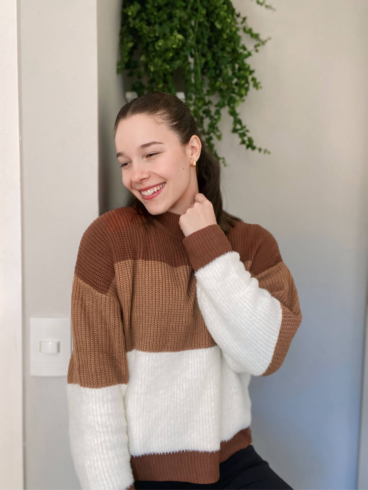

A vida é sobre ser você, não sobre ser perfeita.
Aqui é um espaço para respirar fundo, acolher quem você é hoje e construir, aos poucos, a vida que faz sentido pra você. Eu sou Yole, psicóloga que acredita na força de ser você mesma.
 Conheça minha trajetóriaServiços
Meu trabalho é voltado para oferecer acolhimento e suporte emocional em diferentes momentos da vida. Conheça algumas possibilidades de atendimento:
Terapia Online
Flexibilidade e praticidade para você cuidar de si mesma(o) de qualquer lugar, com a mesma qualidade do atendimento presencial.
Terapia para Emagrecimento
Processo psicoterapêutico voltado ao trabalho dos pensamentos sabotadores e comer emocional. Tem o objetivo de colaborar com o emagrecimento de forma saudável e sustentável.
Terapia para Transtornos Alimentares
Atendimento psicoterapêutico com o objetivo de tratar pacientes diagnosticados com Transtornos Alimentares.
Terapia para Sobrecarga e Ansiedade
Em um mundo em que a ansiedade e a sobrecarga predominam, é necessário saber trabalhar essas questões para viver de forma mais leve e equilibrada.